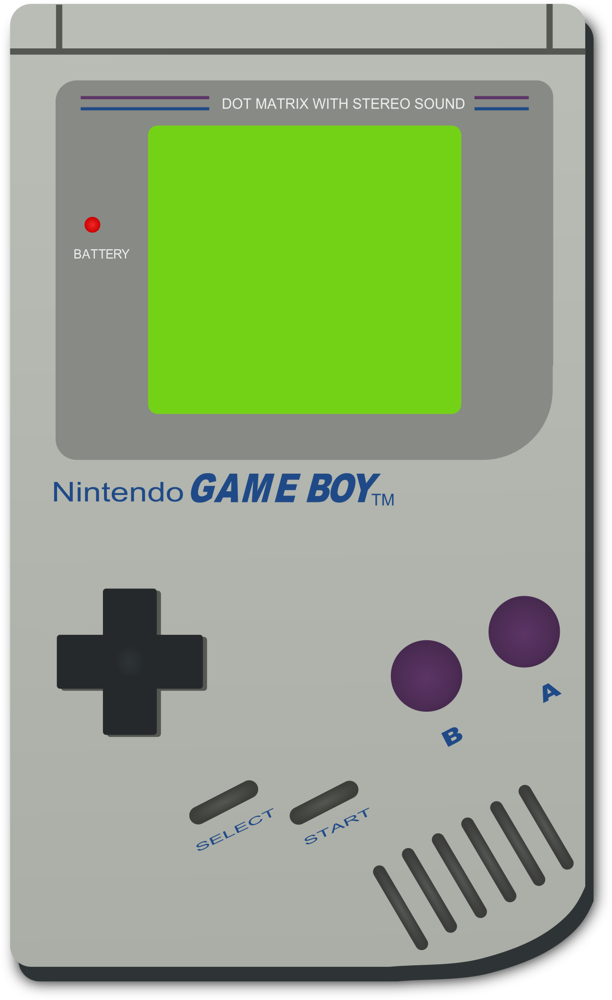

<!-- Header.html: Shared header for all pages -->
<header>
    <div class="header-container">
        <a href="Home.html" class="logo-link">
            
        </a>
        <nav class="nav-header" style="position:relative;">
            <a href="Games.html" class="nav-btn">Games</a>
            <div class="dropdown">
                <a href="Consoles.html" class="nav-btn consoles-fun-btn">Consoles</a>
                <div class="dropdown-content">
                  <a href="../Consoles/Nitendo Game Boy.html">Nitendo Game Boy</a>
                  <a href="../Consoles/NES.html">NES</a>
                  <a href="../Consoles/Super Nintendo (SNES).html">Super Nintendo (SNES)</a>
                  <a href="../Consoles/Super Nintendo (SNES)55.html">Super Nintendo (SNES)55</a>
                  <a href="../Consoles/GBC.html">GBC</a>
                </div>
            </div>
        </nav>
    </div>
</header>
<style>
.header-container {
    display: flex;
    align-items: center;
    justify-content: space-between;
    background: #222;
    padding: 0.5rem 2rem 0.5rem 1rem;
}
.logo-header {
    width: 70px;
    height: auto;
    display: block;
    margin-right: 0.5rem;
    border-radius: 10px;
    box-shadow: 0 2px 8px rgba(0,0,0,0.15), 0 0 24px 8px #fff, 0 0 48px 12px #fff;
}
.logo-link {
    display: flex;
    align-items: center;
}
.nav-header {
    display: flex;
    gap: 2rem;
    position: relative;
}
.nav-header a.nav-btn {
    color: #f5f5f5;
    text-decoration: none;
    font-size: 2.2rem;
    padding: 1.5rem 3.5rem;
    border-radius: 16px;
    background: #333;
    transition: background 0.2s, box-shadow 0.2s, border 0.2s;
    font-family: 'Comic Sans MS','Comic Sans',cursive,sans-serif;
    font-weight: bold;
    display: inline-block;
    vertical-align: middle;
    border: 4px solid #f44336; /* red outline */
    box-shadow: 0 8px 32px #f44336, 0 0 0 6px #232323 inset; /* red glow */
    letter-spacing: 2px;
}
.nav-header a.nav-btn:hover {
    background: #444;
    border-color: #ff1744;
    box-shadow: 0 12px 36px #ff1744, 0 0 0 6px #232323 inset;
}
.nav-header a.nav-btn:hover {
    background: #444;
}
/* Fun, retro, playful Consoles button */
/* Simpler Consoles button, blue outline, red glow, no emoji */
.consoles-fun-btn {
  background: repeating-linear-gradient(135deg, #232323 0 10px, #333 10px 20px);
  color: #ffe066;
  font-family: 'Press Start 2P', 'Comic Sans MS', 'Comic Sans', cursive, sans-serif;
  font-size: 2.2rem;
  font-weight: bold;
  border: 4px solid #2196f3; /* blue outline */
  border-radius: 16px;
  box-shadow: 0 8px 32px #2196f3, 0 0 0 6px #232323 inset; /* blue glow */
  text-shadow: 3px 3px 0 #000, 0 0 12px #ffe066;
  outline: none;
  margin-left: 0.5rem;
  margin-right: 0.5rem;
  cursor: pointer;
  letter-spacing: 2px;
  padding: 1.5rem 3.5rem;
  transition: box-shadow 0.2s, border 0.2s, background 0.2s, color 0.2s;
  position: relative;
  overflow: hidden;
}
.consoles-fun-btn:hover, .consoles-fun-btn:focus {
  background: repeating-linear-gradient(135deg, #2196f3 0 10px, #64b5f6 10px 20px);
  color: #232323;
  border: 4px solid #2196f3;
  box-shadow: 0 12px 36px #2196f3, 0 0 0 6px #2196f3 inset;
  text-shadow: 2px 2px 0 #fff, 0 0 8px #2196f3;
}
  /* Dropdown styles for Consoles button */
  .dropdown {
    position: relative;
    display: inline-block;
  }
  .dropdown-content {
    display: none;
    position: absolute;
    background: #232323;
    min-width: 220px;
    box-shadow: 0 8px 24px rgba(0,0,0,0.25);
    border-radius: 10px;
    z-index: 10;
    margin-top: 0.5rem;
    left: 0;
    padding: 0.5rem 0;
  }
  .dropdown-content a {
    color: #ffe066;
    padding: 0.7rem 1.5rem;
    text-decoration: none;
    display: block;
    font-family: 'Press Start 2P', 'Comic Sans MS', 'Comic Sans', cursive, sans-serif;
    font-size: 1.05rem;
    border-radius: 6px;
    transition: background 0.2s, color 0.2s;
  }
  .dropdown-content a:hover {
    background: #ff5e00;
    color: #232323;
  }

</style>
<script>
// Toggle dropdown on click
document.addEventListener('DOMContentLoaded', function() {
  var btn = document.querySelector('.consoles-fun-btn');
  var dropdownContent = document.querySelector('.dropdown-content');
  if (!btn || !dropdownContent) return;
  let open = false;
  btn.addEventListener('click', function(e) {
    e.preventDefault();
    open = !open;
    dropdownContent.style.display = open ? 'block' : 'none';
  });
  // Close dropdown if clicking outside
  document.addEventListener('click', function(e) {
    if (!btn.contains(e.target) && !dropdownContent.contains(e.target)) {
      dropdownContent.style.display = 'none';
      open = false;
    }
  });
});
</script>

</style>

<!-- Google Fonts for retro look -->
<link href="https://fonts.googleapis.com/css2?family=Press+Start+2P&display=swap" rel="stylesheet">
